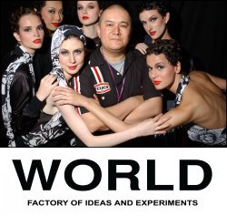

Francis Hooper, designer
World is a New Zealand fashion label that really lives up to its name. Prism editor Ben Hoyt chats about business and fashion with their chief designer, Francis Hooper. (Or download an audio recording of the full interview (MP3, 6.7MB). Please note that this recording is unedited.)
How did you come up with the name?
We wanted something that wouldn’t box us in … something timeless. We didn’t want a name that would just conjure up pretty-girl dresses or whatever. With world we can pretty much do whatever we want underneath that name, from sublime to verging on ridiculous. But of course the other side is the fantasy. We wanted to be world-wide.
Do you also try to incorporate a sense of Kiwi in your design or business processes?
Well, in the sense that it’s from here, but we don’t wear the badge on our lapel. It just becomes too parochial or political, and you kill the spark of creativity. We don’t go “Kiwi” or “Aotearoa” – that can take away from what’s great about the product. But we proudly say “Made in New Zealand” on our labels, and I believe it’s obvious where we’re from because of the way we approach things.
What inspired you to take up fashion design?
I fell into it, really. I’m not trained and have never taken a fashion course … I used to be a DJ. It was amazing, I just needed a job, and ended up at Commes des Garons, and then with John Galliano, who’s now of course world famous. I was lucky.
News articles make it sound like it was really easy for you and your wife Denise to start world back in 1989. What’s one key piece of advice you have for starting a business?
Really easy! [laughs] They sensationalise. They talk about us as one of the “big brands”. Of course we were a big brand, but only because we were one of the first. My advice is to work really hard, that’s the only key thing. If you think 40 to 50 hours, that’s a [fashionably colourful language] Victorian unionist ideal … try 70 to 100 hours. Oh, the second thing is, just have a real belief in your talent.
What are some of the unfashionable things involved in starting a fashion business?
There’s nothing unfashionable, really, it was a clean slate. New Zealand was uneducated in fashion, and we’re always trying to convince and educate the NZ public and the global public. We knew we had to do this if they were going to take us seriously.
World is usually described as being “avant-garde” or “experimental”. Are these labels you’d use yourself?
“Avant-garde” is kind of a redundant word. Fashion’s gotten so slick, and it’s become a bit of a lie, really, so much of it’s just bull[snip]. We’re still leaders in our field of fashion, but we do so much more – menswear, children’s, women’s, accessories. To say “avant-garde” is too limiting.
So who would your major buyers and wearers be?
Everyone, really. Our average customer is 30 … well, we have lots of 20-somethings, but equally we have a lot of women up to their late forties. They want colour, something different, great shape. And men from 20 to 50 come to us. But we don’t really design clothes for a specific sector, we’re still very “true” as designers. We don’t do market research and focus groups and all that – I mean, we’re not McDonalds. And I think true fashion should be like that.
How does a particular design get from the catwalk to the buyer?
Why it’s succeeded for us is that we run our own stores in New Zealand. There’s a true honesty there – if we believe in something, we’ll make it and put it in our shops and show it to you. Internationally it’s different – the catwalk is totally different from the store. All you’ll ever see is a very watered-down version of the brand, so they lose it. We often stand out like a sore thumb, and the bad side is that you could hate it!
Has technology and the Internet affected your business?
At present it’s made it harder for us, actually. We’re still old-fashioned, we work on patterns, we work on cloth and cutting. We don’t sell on the net … you need to see the cut, the colour, the feel.
Getting philosophical, what do you think is the purpose of fashion design? What about the purpose or meaning of clothing?
Fashion is to seduce, to excite, to create beauty and sexiness in both men and women. You can’t walk around naked, you just can’t do that. Fashion is the sexy end of clothing, and a reflection of society. Most people don’t realise how important it is to global culture. Society at present places huge value on fashion – rightly or wrongly.
My wife and I are expecting a baby, and have to start looking at kids’ clothing. What are some of the special things you have to think about with world Baby?
First of all, we’re running a business, so it’s got to be practical, washable, wearable … we only use natural fibres. Basic practicality actually comes to the forefront. A baby has to be fireproof and warm. We play to the adult, but we make sure baby is protected. But we don’t go too crazy. My concern is that mum and dad don’t go out and spend $900 on baby.
How do you balance work and social life, or work and family – or are they too intertwined to talk about balancing?
They have been, yes. If you go back and do the timeline, we got married and opened the business all in the same month, and then had a daughter in the same year. I have been accused of not being able to switch off, though my wife is a lot more departmentalised.
How do you and Denise complement each other in your design efforts?
Denise is the serious one and I’m the silly one, we’re really chalk and cheese. We’ve succeeded because we respect each other’s opinions. Trust is the most important thing, and this involves money, time, direction. And also, we’re married, not just partners in business, and that means forever … at least we hope it does! [laughs]